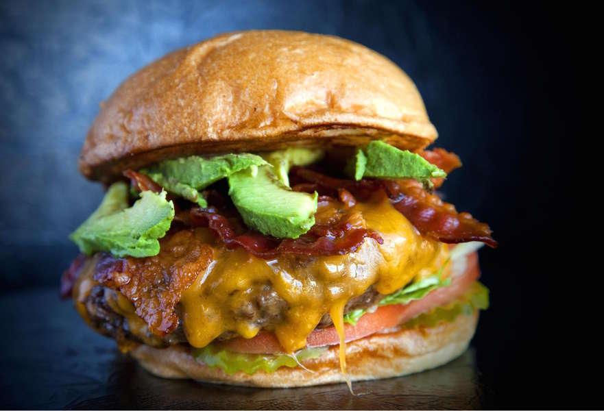

Ready to enjoy summer with a burger with kick? Well the bacon grease acts as a glue and will cook out on the grill, leaving the flavor in the beef. Excellent with grilled portabello caps!
Mix ground beef, bread crumbs, red pepper flakes, black pepper, and retained bacon drippings in a bowl until thoroughly combined; divide meat mixture into 4 equal portions. Form each portion into a large patty, making them as thin as possible. Sprinkle shredded Colby-Jack cheese onto 2 of the patties, leaving an edge about 3/4 inch wide uncovered. Place second patty onto the cheese and press the edges of the patties together to create 2 cheese-stuffed burgers. Place stuffed patties into freezer to chill slightly, about 10 minutes.
Spray the grill grate with cooking spray and place burgers onto grill; turn heat to low, place lid over grill, and cook until outsides of burgers are lightly charred and cheese has melted, about 10 minutes per side. Maintain grill temperature at about 300 degrees F (150 degrees C). Use a spray bottle of water to control flames; flames should just lightly contact the bottoms of the burgers to create a slight char. After the first flip, place 3 partially-cooked bacon slices onto each burger.